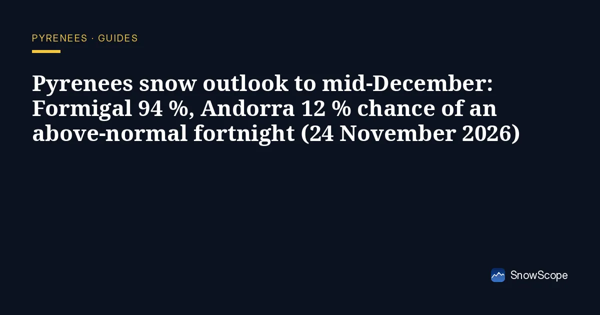
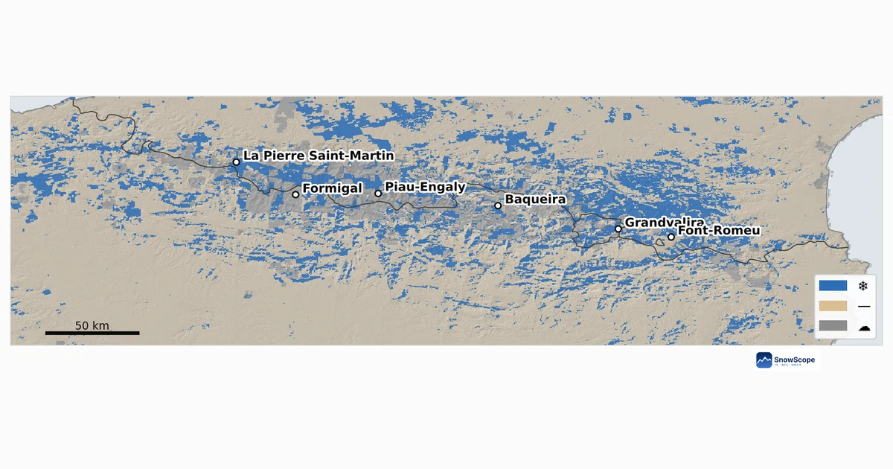

Pyrenees snow outlook to mid-December: Formigal 94 %, Andorra 12 % chance of an above-normal fortnight (24 November 2026)
The Pyrenees are split in two for the coming fortnight. The 50-member ECMWF ensemble of 24 November gives Formigal a median of 57.9 cm of fresh snow by 8 December, against a 1991-2020 normal of 36.5 cm, and 94 % of the members above normal. Baqueira has 72 %. But at Grandvalira it is 12 % and at Font-Romeu only 6 %. Across the range the mean is 19.1 mm of snow water against 18.3 mm, a coin toss at 46 %. NASA's MODIS shows the starting point: snow on 44 % of the visible ground above 1,000 m, mostly white from about 1,500 m.
See the live snow forecast for Baqueira in the SnowScope appSnow depth, powder alerts and the 3D map, free.

Snow on the ground today: NASA MODIS
The Pyrenees spent most of last week under cloud: on 16, 17 and 21 November, MODIS saw none of the mountain ground clearly. Keeping the last clear look of each 500 m pixel between 16 and 23 November, 50 % of the visible ground was seen on 23 November, when 38 % was clear, and 23 % stayed hidden all week.
Above 1,000 m, MODIS counts 6,846 km² of snow against 8,659 km² of bare ground. The white share rises from 29 % between 1,000 and 1,250 m to 50 % between 1,500 and 1,750 m, 65 % between 2,000 and 2,250 m and 81 % above 2,500 m, so the snow line is near 1,500 m. Gascoin et al. (2015) built a MODIS snow climatology of the Pyrenees with the same products and showed how strongly the Spanish side and the French side can differ, which is also what the forecast says now.

24 November to 8 December: the ECMWF ensemble
Most of the snow comes in the first week. Median totals for 24 to 30 November: Formigal 46.6 cm, Piau-Engaly 26.1 cm, Baqueira 20.6 cm, La Pierre Saint-Martin 14 cm, Grandvalira 9 cm and Font-Romeu 5.4 cm. For 1 to 8 December the medians drop to 7.6 cm at Formigal and 7.8 cm at Baqueira.
Over the 15 days: Formigal median 57.9 cm (wettest tenth 78.1 cm), normal 36.5 cm, 94 % above normal; Baqueira 31.7 cm, normal 23.4 cm, 72 %; Piau-Engaly 36.6 cm, normal 31.6 cm, 54 %; Grandvalira 13.3 cm, normal 25.6 cm, 12 %; Font-Romeu 7.8 cm, normal 23.7 cm, 6 %.
The snow share φ = S / P matters in the west. At the La Pierre Saint-Martin cell, whose mean height is only 1,084 m, 24 % of the precipitation falls as snow; at the higher Formigal cell (2,002 m) it is 88 %. The resort itself is higher than its cell, so it does better than the 0.25° grid suggests. Fresh snow is computed as snow water times ρw / ρnew with ρnew about 100 kg/m³ (Judson and Doesken 2000).

9 to 14 December: NOAA GEFS
For days 16 to 21 we use the 16 complete members of NOAA's GEFS of 24 November, counting 6-hour precipitation only when the snow flag is on (S = Σ P6h · CSNOW). Across the range 44 % of members beat the normal of those six days, mean 10.6 mm against 8.1 mm. La Pierre Saint-Martin has 44 %, Formigal and Piau-Engaly 38 %, Grandvalira 31 %. That is close to no signal: with 16 members, one member is about 6 percentage points (Vitart 2014).

The NAO and Pyrenean snow
López-Moreno and Vicente-Serrano (2007) showed that the snowpack of the Spanish Pyrenees grows in winters of negative NAO, when Atlantic lows track further south (Hurrell 1995). NOAA's GEFS forecast has the NAO at +0.97 on 26 November, then near -0.29 on 4 December, with 60 % of member-days negative from day 8. The Arctic Oscillation goes down to -1.34 on 2 December.
This week the heaviest totals are in Aragón, Bigorre and the Val d'Aran, much less in the eastern Pyrenees, the usual signature of Atlantic storms. If the NAO goes clearly negative in December, the west and centre would be the first to profit again; the east, open to Mediterranean lows, needs a different pattern, an easterly flow from the Gulf of Lion.
How to read these numbers
Every number is for a 0.25° cell of about 28 by 20 km, whose mean height is often several hundred metres below the ski area. We compare each cell with its own 1991-2020 normal, so the ratio cancels most of that height effect. The members are 50 equally likely futures; a chance of 6 % means 3 members, unlikely but possible.
Snowfall is not snow on the ground: wind, sun and rain on snow move and melt it. Remote sensing studies such as Durand et al. (2008) combine snow maps with energy balance to reconstruct the snow water actually on the ground. For the next 5 days, use a daily forecast and resort reports.


Tips for skiers
- Best odds for a snowy start of December: Formigal, Panticosa, Piau-Engaly and Baqueira (72 % above normal).
- Andorra and Cerdanya: a leaner fortnight, rely on snowmaking until mid-December.
- After this week's snowfall, check the avalanche bulletins (Météo-France, AEMET, Lauegi) before going off-piste.
- Check again around 1 December, when the odds for 9-14 December become sharper.
References and credits
- ECMWF open data: IFS ensemble forecasts (ENS), run of 24 November 2026 00 UTC, 0.25° grid, snowfall and total precipitation (CC BY 4.0) www.ecmwf.int/en/forecasts/datasets/open-data
- Zhou, X. et al. (2022). The development of the NCEP Global Ensemble Forecast System version 12. Weather and Forecasting 37, 1069-1084 doi.org/10.1175/WAF-D-21-0112.1
- NOAA Global Ensemble Forecast System (GEFS) open data on AWS: run of 24 November 2026 00 UTC, 0.5° grid, APCP and CSNOW registry.opendata.aws/noaa-gefs/
- Hersbach, H. et al. (2020). The ERA5 global reanalysis. Quarterly Journal of the Royal Meteorological Society 146, 1999-2049 (monthly means 1991-2020, Copernicus Climate Change Service) doi.org/10.1002/qj.3803
- NOAA Climate Prediction Center: daily NAO, AO, PNA and AAO index forecasts from the GEFS ensemble www.cpc.ncep.noaa.gov/products/precip/CWlink/
- López-Moreno, J.I. and Vicente-Serrano, S.M. (2007). Atmospheric circulation influence on the interannual variability of snow pack in the Spanish Pyrenees during the second half of the 20th century. Nordic Hydrology 38, 33-44 doi.org/10.2166/nh.2007.030
- Hurrell, J.W. (1995). Decadal trends in the North Atlantic Oscillation: regional temperatures and precipitation. Science 269, 676-679 doi.org/10.1126/science.269.5224.676
- Gascoin, S., Hagolle, O., Huc, M., Jarlan, L., Dejoux, J.-F., Szczypta, C., Marti, R. and Sánchez, R. (2015). A snow cover climatology for the Pyrenees from MODIS snow products. Hydrology and Earth System Sciences 19, 2337-2351 doi.org/10.5194/hess-19-2337-2015
- Vitart, F. (2014). Evolution of ECMWF sub-seasonal forecast skill scores. Quarterly Journal of the Royal Meteorological Society 140, 1889-1899 doi.org/10.1002/qj.2256
- Riggs, G.A., Hall, D.K. and Román, M.O. (2019). MODIS Snow Products Collection 6.1 User Guide. NASA / NSIDC nsidc.org/sites/default/files/c61_modis_snow_user_guide.pdf
- NASA Global Imagery Browse Services (GIBS): MODIS_Terra_NDSI_Snow_Cover and MODIS_Aqua_NDSI_Snow_Cover, 16-23 November 2026 www.earthdata.nasa.gov/engage/open-data-services-software/earthdata-developer-portal/gibs-api
- Copernicus DEM GLO-90 (European Space Agency, Copernicus programme) doi.org/10.5270/ESA-c5d3d65
- Judson, A. and Doesken, N. (2000). Density of freshly fallen snow in the central Rocky Mountains. Bulletin of the American Meteorological Society 81, 1577-1587 doi.org/10.1175/1520-0477(2000)081<1577:DOFFSI>2.3.CO;2
- Durand, M., Molotch, N.P. and Margulis, S.A. (2008). Merging complementary remote sensing datasets in the context of snow water equivalent reconstruction. Remote Sensing of Environment 112, 1212-1225 doi.org/10.1016/j.rse.2007.08.010
About these numbers
Snowfall: ECMWF ensemble (50 members, 0.25°) to day 15, NOAA GEFS (16 members, 0.5°) for days 16-21, compared with the 1991-2020 normal of the same calendar days. Snow on the ground: NASA MODIS, last clear view 16-23 November. Mountain cells above 1,000 m.
Cite this report
For research, teaching or the press: the numbers and charts are free to reuse under CC BY 4.0 with this citation.
SnowScope (2026), Pyrenees snow outlook to mid-December: Formigal 94 %, Andorra 12 % chance of an above-normal fortnight (24 November 2026), https://snowscope.app/blog/en/2026/11/pyrenees-snow-outlook-next-3-weeks-ecmwf-noaa-24-november-2026.html, accessed 2026-11-24
SnowScope (Atlas Labs). (2026, November 24). Pyrenees snow outlook to mid-December: Formigal 94 %, Andorra 12 % chance of an above-normal fortnight (24 November 2026). SnowScope snow reports. https://snowscope.app/blog/en/2026/11/pyrenees-snow-outlook-next-3-weeks-ecmwf-noaa-24-november-2026.html
BibTeX
@misc{snowscope2026pyreneessnowoutlooknext3,
author = {{SnowScope (Atlas Labs)}},
title = {Pyrenees snow outlook to mid-December: Formigal 94 %, Andorra 12 % chance of an above-normal fortnight (24 November 2026)},
year = {2026},
month = nov,
howpublished = {\url{https://snowscope.app/blog/en/2026/11/pyrenees-snow-outlook-next-3-weeks-ecmwf-noaa-24-november-2026.html}},
note = {Published 2026-11-25 08:19 UTC; accessed 2026-11-24}
}· CC BY 4.0 · Methods, data and tools →
Follow Baqueira
Free: a message when fresh snow is coming, and the forecast every morning.